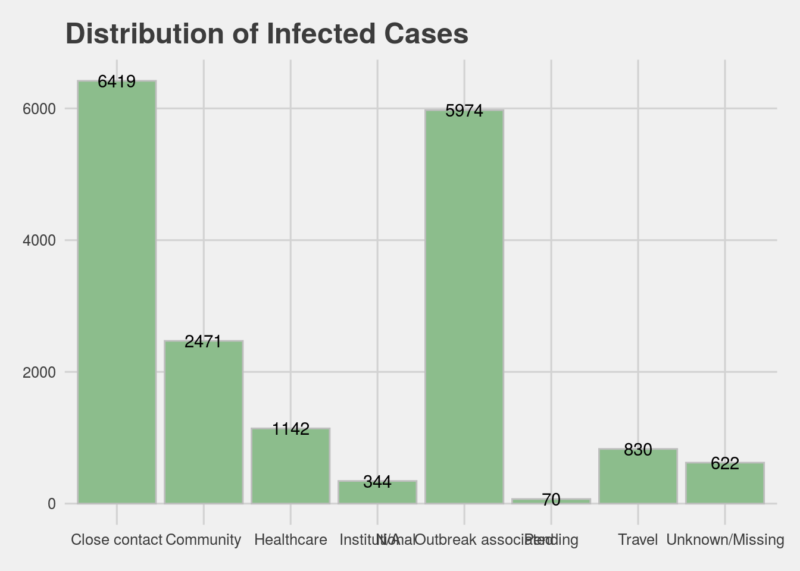
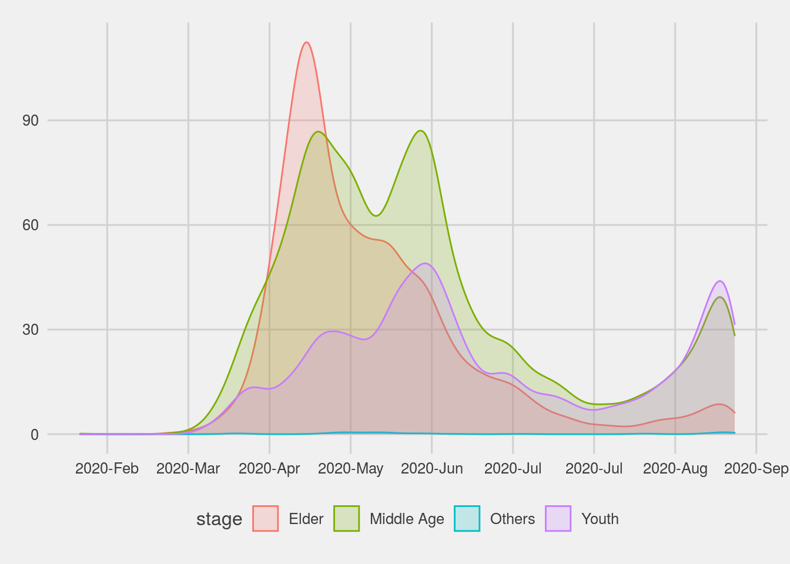

Abstract
Responding to the current ongoing outbreak, the reported focus on the trend of daily new cases of COVID-19 in Toronto and the proportion of different age groups in this outbreak. According to the dataset extracted from the provincial communicable disease reporting system (iPHIS) and Toronto’s custom COVID-19 case management system (CORES). The data supported the hypothesis that the second outbreak was mainly contributed by the young ages, closer monitoring and focus should be put on the young population since the main source of infection is close contact. However, the analysis limits in its lack of considering the proportional relationship of the young citizens, the real severity of pandemic situation might be more alarming then what we observed.
Introduction
Toronto Public Health has declare outbreaks in Toronto, two hundreds of new COVID-19 cases were reported and this day-to-day increases in newly reported should be alarming to both the citizens and the government. The outbreak happened after the removal of the lockdown protocol. Therefore, we are interested in the proportion of the infected in the second outbreak with the main focus on different age groups. Can we attribute the second rise in number to the youth after unblocking or the main infected are all middle aged due to their large make up.
To find the evidence for the hypothesis, we could plot a bar graph to have an overview of the cases. Density plot for daily new cases in each age group could inform us with a trend, so that we could see whether pandemic between age groups are put under control. From the visualization, we cold find that indeed that the young population has the most daily report number, however the difference in numbers of the middle ages and the youngsters are not large. By observing the trend and analyze the skewness of each distribution, we conclude that the pandemic among the elders are controlled and has entered an relatively stable stage, while the second modes of the middle age groups’ outbreak is significant. Especially when we find that the main source of infection is havng close contact.
According to the density plot, though the second outbreak is now entering the second half, it is to our awareness that action targeted at certain age groups is required, when there is no more city lockdown. With the interest of citizen, we suggest that the future work could pay more emphasis on the managing the pandemic situation in educational institutions and consuming places where the youngsters would congregate. Statistically, more attention should be paid on monitoring the future trend of new case reports, moreover, the pandemic situation of the youth should be priority among priorities. The analysis has its limitation. The proportion between the population and the reported cases could be considered, it is reported by City of Toronto that city’ population has a higher proportion of the middle ages rather than the youngsters. From this perspective, we could new cases in each age group share some values, but we need to consider it in the context of population when monitor and evaluating the pandemic situation of the youth.
Data
This report and its analysis and related data visualizations are based on the dataset “COVID-19 Cases in Toronto” published by Gelfand (2020). The dataset contains the demographic, geographic information and severity of the symptoms, Gelfand collected and released the data since the first reported cases in Toronto, and the last update was September 23th, 2020. According to the publisher, the data were collected from the provincial communicable disease reporting system (iPHIS) and Toronto’s custom COVID-19 case management system (CORES), data from two sources were combined.
The dataset collected detail information about each case’s course of the disease. Status of the cases were recorded, including whether the case is ever hospitalized, intubated or be in ICU.
The variables we focus on this reports are the number of daily new cases in Toronto (both confirmed and probable cases) and the the ages of the patients. The variable of daily increase cases is quantitative. For the age of the cases, the data were recorded and sorted into several age groups (i.e. “20 to 29 Years” group), therefore this variable is qualitative. The date when the cases were reported are also be the point of our discussion, which is also a quantitative variable.
how i introduce the scenario and objectives
Summary statistics
covid_data <- covid_data %>%
mutate(age = case_when(
`Age Group` %in% c('19 and younger') ~ '19 and younger',
`Age Group` %in% c('20 to 29 Years') ~ '20 to 29 Years',
`Age Group` %in% c('30 to 39 Years','40 to 49 Years', '50 to 59 Years') ~ '30 to 59 Years',
`Age Group` %in% c('60 to 69 Years','70 to 79 Years', '80 to 89 Years',
'90 and older') ~ '60 and older',
TRUE ~ "Others"))
p1 <- covid_data %>%
filter(age != "Others") %>%
ggplot(aes(age)) +
geom_bar(fill='#8CBD8C',col='grey') +
xlab('Age Groups of Covid Cases in Toronto') +
ggtitle("Distribution of Infected Cases") +
theme(axis.text.x = element_text(angle = 45, hjust = 1)) +
theme_fivethirtyeight() +
ylab('Number of Cases') +
geom_text(stat='count', aes(label=..count..), vjust=-0.5)
p1Figure 1: Toronto Cases overview
With the package ggplot2 developed by Wickham (2016), we generated a bar graph of the COVID’s age groups. In the graph above, we could inform that among the reported cases, the majority of the patients were aged between 30 to 59 years old, while the number of elder cases were more than 5600, reported to be more than the youngsters.
p2 <- covid_data %>%
ggplot(aes(`Source of Infection`)) +
geom_bar(fill='#8CBD8C',col='grey') +
xlab('Age Groups of Covid Cases in Toronto') +
ggtitle("Distribution of Infected Cases") +
theme_fivethirtyeight() +
ylab('Number of Cases') +
geom_text(stat='count', aes(label=..count..), bjust=-0.5)
## Warning: Ignoring unknown parameters: bjust
p2 From the bar graph above, we could inform that the main source of infection is having close contact with potential virsus carriers.
date <- seq(as.Date('2020-01-23')-20,as.Date('2020-09-30'), '30 days')
date_breaks = c(seq(18264,18526,15))
date_labels = as.character(date)
reported_date <- as.Date(covid_data$`Reported Date`)
reported_num <- as.numeric(reported_date)
bin <- 30
p0 <- covid_data %>%
ggplot(aes(reported_date, ..count..)) +
geom_density() +
scale_x_date(breaks = date, labels = date_format("%Y-%b")) +
theme(axis.text.x = element_text(angle = 45, hjust = 1)) +
theme_fivethirtyeight(base_size = 12, base_family = "sans") +
ggtitle("Daily Newly Reported COVID-19 Cases in Toronto")
p0
(#fig:single plot)Historial Number of Newly Reported Cases
Using Wickham (2016) and Wickham et al. (2020), we plotted a density graph of daily increase in Toronto. According to the graph, there exists peaks in mid April and the end of the June, and we could spot the third peak in August. Overall the distribution of newly reported cases appears to be multi-modal. Although the third rise is not the same severe and massive compared to the first and the second wave, it still reveals the possibility of the pandemic could become periodic. According to the City of Toronto announcement, city government remove the lock down, and it followed the second wave of outbreak. It is hypothesized that the youngsters mainly contributed to this rise. To find evidence support or refute this argument, we could plot the trends of daily reported cases for each age groups.
Data and Visualizations
covid_data <- covid_data %>%
mutate(stage = case_when(
`Age Group` %in% c('19 and younger','20 to 29 Years') ~ 'Youth',
`Age Group` %in% c('30 to 39 Years','40 to 49 Years', '50 to 59 Years') ~ 'Middle Age',
`Age Group` %in% c('60 to 69 Years','70 to 79 Years', '80 to 89 Years',
'90 and older') ~ 'Elder',
TRUE ~ "Others"))covid_data %>%
ggplot(aes(reported_date, ..count.. , fill = stage, color=stage)) +
geom_density(alpha=0.2,bw=5, position = position_dodge()) +
scale_x_date(breaks = date, labels = date_format("%Y-%b")) +
theme_fivethirtyeight(base_size = 12, base_family = "sans")
## Warning: Width not defined. Set with `position_dodge(width = ?)` In the density graph using Arnold (2019) and (???), we find that the infected are of the group of elders in preliminary stage, elderly distribution of cases is heavily right skewed. According to the skewness we could conclude that the number of the elders being infected significantly have dropped, this trend is well maintained and it is not affected by the removal of city lockdown. Moreover, it shows that the trends of the elders are suppressed because of zero sign of being skew to left. For the middle ages, the newly reported cases showed to centralize on April to June. While the youth reported the least amount during this period, it did not reach its first peak until June, however, we could find the mid-August mode of daily new cases in youth to be the same as the June one.
Shifted sight to August, 2020, by comparing the peaks of distributions, the August mode of the youth showed to be higher than upper-age groups. There exists evidence supporting that the major contributor of the second outbreak. Due to the similar modes within the young cases distribution,it is suspected that the pandemic among the youngsters could be periodic.
Discussion, Weakness and Next Steps
According to the visualization and the analysis above, we could conclude that our hypothesis is supported with data evidence. The youngsters are the main contributor to the second outbreaks, and it shows a susceptible periodic trend. We ought to predict that if there is not active and effective methods are applied, it is likely that there would be a new outbreak in possible November. Statistically, we should focus more on the young populations, updated source of infection in youngsters could inform us how to protect and operate so that the pandemic could be further suppressed.
The analysis has its limitations. Only by visualizing the new daily cases of each age group ignore the relationship between the reported cases and the population. By City of Toronto, the middle ages proportionate larger compared to the young population, such fact may deepen the fact that the pandemic situation is more severe among young Toronto citizens since the young reported number appears to outnumber the middle ages. With considering that, further analysis should be also show proportional relationship between the infected and the population.
References
Arnold, Jeffrey B. 2019. Ggthemes: Extra Themes, Scales and Geoms for ’Ggplot2’. http://github.com/jrnold/ggthemes.
Gelfand, Sharla. 2020. Opendatatoronto: Access the City of Toronto Open Data Portal.
Wickham, Hadley. 2016. Ggplot2: Elegant Graphics for Data Analysis. Springer-Verlag New York. https://ggplot2.tidyverse.org.
Wickham, Hadley, Romain François, Lionel Henry, and Kirill Müller. 2020. Dplyr: A Grammar of Data Manipulation.